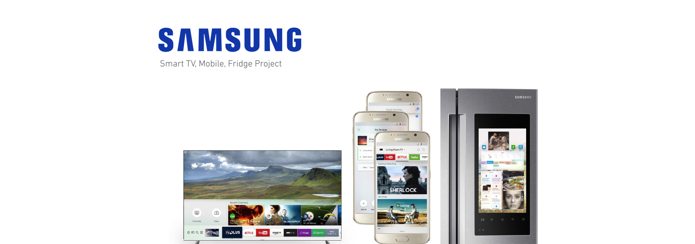

Samsung Smart Display UI/UX
Objective Overview
To create a TV UI interface that deals with living spaces in people home. Working on the core
interaction design as well as the visuals for the new update. This will be from beginning from concept to completion
of the visuals and interactions.
User Scenario: Exploration
• Will discuss who the audience is and who uses the product?
• Why is entertainment important?
• How can I personalize my TV settings?
• What is the technology being used?
• How does our current model compare to the competition?
• How can our product be more family friendly to our users?
 User Research and Process
User Research and Process
For this process, I helped brianstorm different moodboards and come up with different ideas on how to make an innovative concept for the new TV UI. To do that, I had to research and put images together to invoke different feelings and messages. By combining colors and natural patterns, I aim to create a UI that is exciting visually while it functions naturally with our current products.
 Comparative Analysis & Feedback.
Comparative Analysis & Feedback.
Taking in feedback from customers who use our product and identifying the common patterns. Comparing different notes and features of past devices help us understand how we can design better and what features do customers really need. In this stage, I want to highlight the process of a user journey and the product exosystem by seeing how our product and is used.
 Technology contraints
Technology contraints
In order to effectively design a UI that is engaging, we need to look at how our designs will interact with the TV Model. What can the current TV do and what can it not do? What are the limitation when it comes to falt design and using images? Are we able to interact with our design using the sensor from the TV and the wireless blue tooth from our mobile phones? I’d like to explore the different devices and triggers that would affect the user.
Building the Concept & Visual ExplorationOnce we know our limitations in the product we use, next is brainstorming was we can create a beautiful design for the display TV. From this point, I helped do research and build the UI by first collecting images and making a moodboard out of it. From there, I tried out different colors until the team feels its just right while looking at a collection of images. Then I started translating abstract ideas into solid visual ui from all the images I collected. Finally I focused that concept around a light theme that makes the visuals of the UI live and one that can interact with the product.

 App Installation feature: Userflow to Visual Execution
App Installation feature: Userflow to Visual Execution
Once I had the UI system establish and finally setup. It was fine to work on one of the key important features of the TV. I was tasked with working on the app installation process for the smart tv. To make the most out of your product, most customers always download apps that work with the TV such as youtube. This gives the product a variety of options to the customers. Here, I looked at how the installation feature would work from a technical point of view while keeping in mind the limitations of the design. After the site flow is created and finalize, I was able to apply the light UI concept to the application. Bringing the light and transparency concept to life, on a live working UI.
 Smart Screen Saver: Mobile/TV Userflows to Visuals
Smart Screen Saver: Mobile/TV Userflows to Visuals
This features functions as a screen saver. You can change the settings on your mobile phone or TV based
on the user profile of the person. Here I explored the roadmap on how the screensaver mode is used both
on the TV and mobile application. I wanted to give the visuals a sleek feel and chose minimal photos that
best represent the concept of light.
The concept behind the screen saver:
• Images with a strong focal point of subject
• Bold use of typography & hierarchy
• Using natural environmental backgrounds
• Using themes based on social interactions
• Having it act like painting in the background when not in use
• Keeping it minimal and clean
 Finalizing Visuals: Keeping it simple & minimal
Finalizing Visuals: Keeping it simple & minimal
After experimenting with different layouts. I was able to finalize that less means more. I feel it was best to leave the big image alone with as little UI as possible so we can take in the crisp picture of the subject. The purpose is to make the interaction UI be as minimal as possible to achieve this effect. Most of the UI will be hidden until the user decides to take the control and bring up the menu to change channels or personal settings.
 Final Visuals: Mobile Design
Final Visuals: Mobile Design
This is the stage where I polished up existing design and make it better by implementing visuals touch controls. Such as making the images & tiles be the core interaction and buttons themselves. For the final design, I stuck with stunning visuals and the ability to customize your own photos & background by letting the user choose to upload their down images. The final visuals also acts like a mobile TV if they are away form the Smart TV at home. Wherever the customers go, we want to make sure they can take the entertainment with them on the go.
 What I learned and the challenges
What I learned and the challenges
• Tackling a design that involves ui elements can be tricky, always communicante with the developer.
• I learned that learning different interaction design patterns is key for a fluid design.
• Sometimes images can speak louder than words, keep the UI simple.
• A good UX is one that is easy to use, we want steps to be second nature.
• Focus on clarity and establish a focal point in the ui interactions.
• It is challenging bring the TV experience down to mobile size interactions.
• Working with engineers to establish sizes & contraints ahead of time.
• Learn how users arrive at a painpoint and solve it with a simple solution.
• Simplifying the UX and eliminating unecessary interactions.